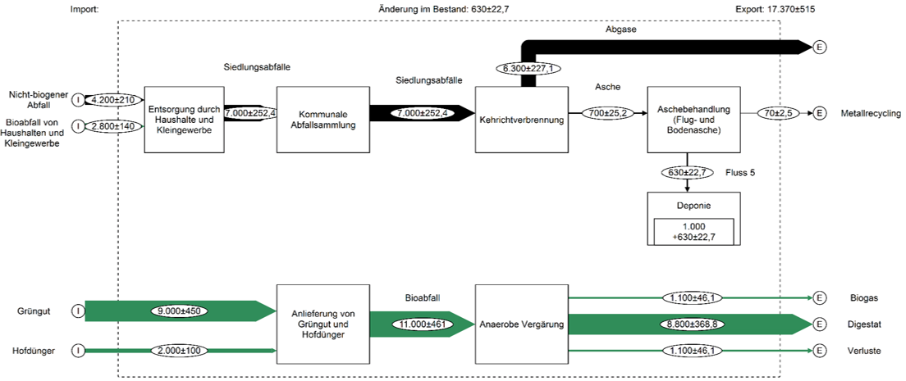
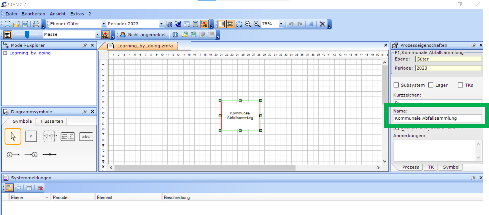
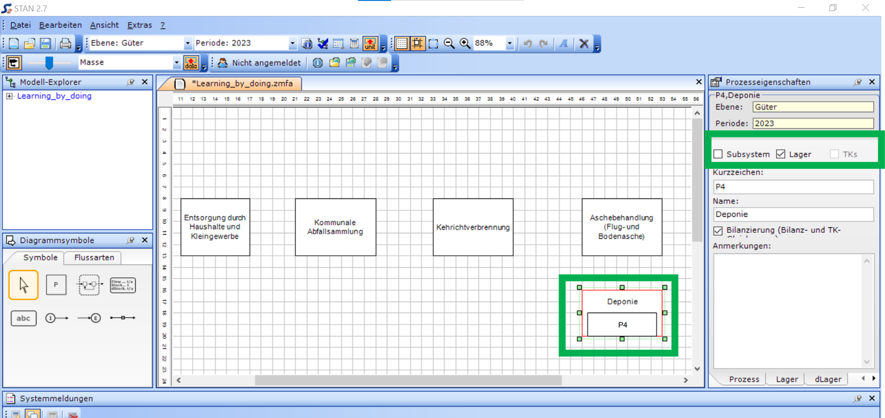
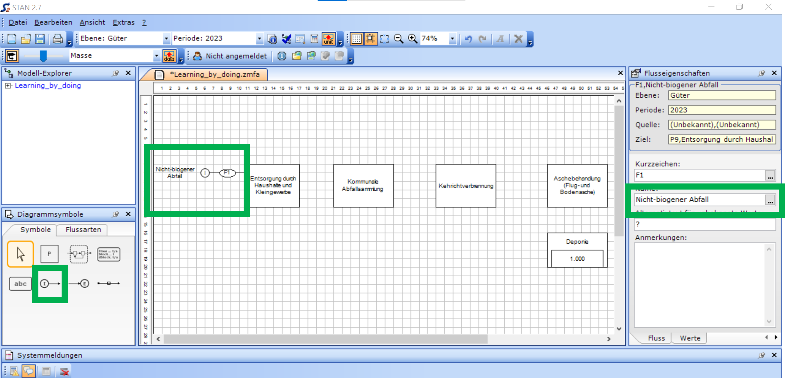
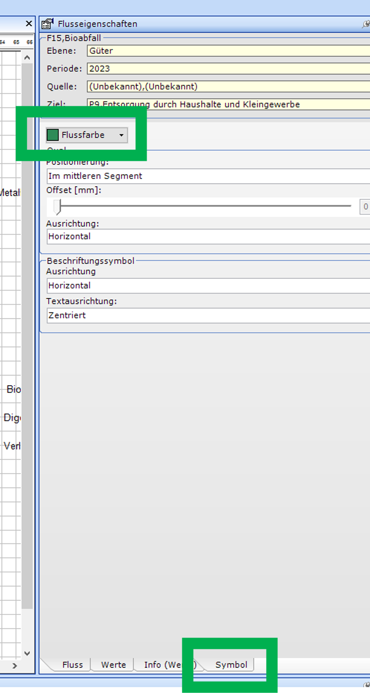
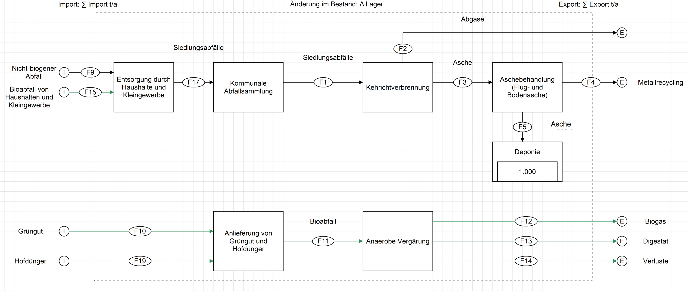
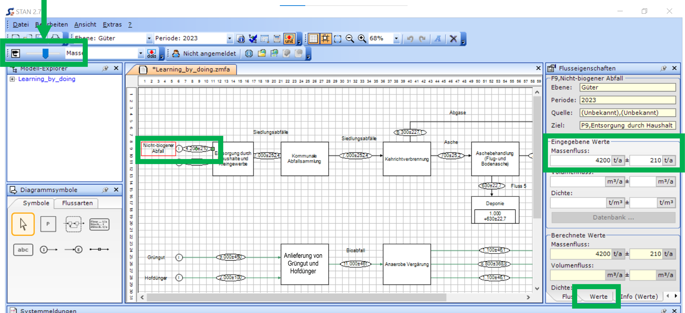
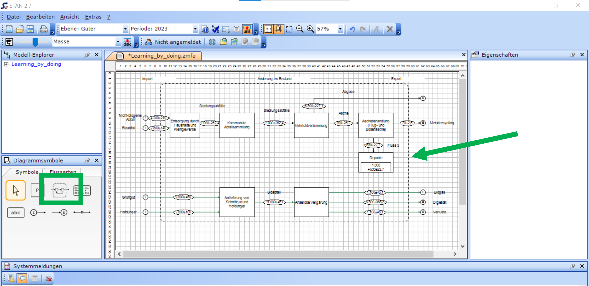
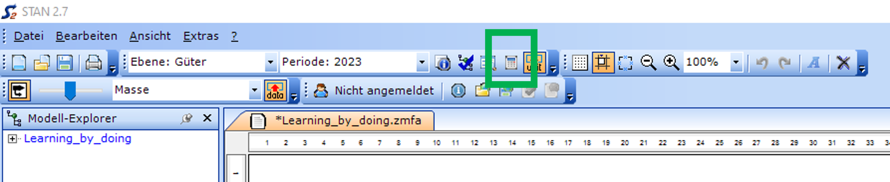

Learning-by-doing
Ziel
Wir modellieren das Abfallmanagement einer Gemeinde mit ca. 10’000 Einwohnern über ein Jahr.
Das derzeitige Abfallmanagement der Gemeinde besteht aus einer kommunalen Abfallsammlung mit Kehrichtverbrennung ohne Separatsammlung biogener Abfälle (“Bioabfälle”). Pro Person fallen ca. 700 kg Siedlungsabfälle pro Jahr an. 60% der Siedlungsabfälle (Masse) ist biogen (biologisch abbaubar). In der Gemeinde besteht bereits eine anaerobe Vergärungsanlage (“Biogasanlage”), welche 9’000 Tonnen Grünabfälle (Schnittgut) und 2’000 Tonnen Hofdünger mehrerer Gemeinden behandelt. Wir werden zunächst Schritt für Schritt das derzeitige System in STAN modellieren (Abbildung).
Danach werden wir im Workshop-Teil Optionen der zusätzlichen Separatsammlung von kommunalem Bioabfall modellieren.

Vorgehen
1. STAN installieren, öffnen und speichern
Installieren Sie STAN, nähere Angaben finden Sie hier.
Öffnen Sie STAN und speichern Sie das Projekt in einem geeigneten Ordner. Es wird eine Datei mit der Projektendung .zmfa generiert. Machen Sie regelmässig Zwischenspeicherungen Ihrer Projekte, da STAN dies nicht automatisch macht.
3. Der erste Prozess
Nun zeichnen Sie als ersten Prozess die kommunale Abfallsammlung (Sie können grundsätzlich auch mit einem beliebigen anderen Prozess beginnen). Wählen Sie dazu in der Symbolleiste das Symbol P (grün markiert) aus und zeichnen Sie ein Rechteck (“Prozess 1”).

Benennen Sie den Prozess “Kommunale Abfallsammlung”. Wählen Sie dazu den Prozess aus und ändern Sie im Fenster Prozesseigenschaften den Namen.

4. Weitere Prozesse und Prozess mit Lager
Nun erweitern Sie die MFA mit weiteren Prozessen.
Fügen Sie rechts des Prozesses “Kommunale Abfallsammlung” die Prozesse “Kehrichtverbrennung” und “Aschebehandlung (Flug- und Bodenasche)” ein. Unterhalb der “Aschebehandlung (Flug- und Bodenasche)” fügen Sie den Prozess “Deponie” ein.
Fügen Sie links des Prozesses “Kommunale Abfallsammlung” den Prozess “Entsorgung durch Haushalte und Kleingewerbe” ein. Diesen Prozess nutzen wir später, um die Trennung zwischen Bioabfall und nicht-biogenem Restabfall zu simulieren. Im IST-Modell gehen 100% des Bioafalls in die kommunale Abfallsammlung.
Bei Bedarf können Sie die Prozesse verschieben, verkleinern und vergrössern.
Die Deponie repräsentiert ein Lager, das sich über die Zeit füllt. Wählen Sie daher den Prozess “Deponie” aus und setzen Sie in den Prozesseigenschaften ein Häkchen bei Lager.

5. Flüsse zeichnen
Nun zeichnen Sie die ersten Flüsse zwischen den Prozessen.
Zunächst können Sie den Importfluss “Nicht-biogener Abfall” von ganz links hin zum Prozess “Entsorgung durch Haushalte und Kleingewerbe” ziehen. Der Importfluss überschreitet die Systemgrenze, d.h. von Prozessen welche uns in der Fragestellung nicht interessieren (z.B. Konsum von Gütern) und ausserhalb der Systemgrenze sind hin zum ersten Prozess innerhalb der Systemgrenze.

Verbinden Sie nun die Prozesse mit Flüssen wie in der Abbildung unten dargestellt. Flüsse zwischen Prozessen sind keine Importflüsse sondern “normale” Flüsse innerhalb der Systemgrenze.

Ausgehend von der “Aschebehandlung (Flug- und Bodenasche)” erstellen Sie nun als ersten Exportfluss “Metallrecycling”. Hierbei handelt es sich um das rückgewonnene Metall aus der Aschebehandlung welche Recyclingprozessen zugeführt werden. Diese Recyclingprozesse interessieren uns hier nicht weiter, da wir uns mit biogenen Abfällen beschäftigen. Daher sind Recyclingprozesse für Metall in diesem konkreten Fall ausserhalb der Systemgrenze.
Nachdem alle Flüsse gezeichnet wurden, können Sie nun alle Flüsse über das Fenster Flusseigenschaften benennen.
Sie können auch die Farbe der Flüsse anpassen über das Fenster Flusseigenschaften im Karteiblatt “Symbol” (siehe nächste Abbildung)

Ergänzen Sie nun alle Prozesse und Flüsse, bis Ihr Modell folgendermassen aussieht.

6. Eingabe der Werte für die Materialflüsse
Aus der Beschreibung des Abfallmanagements der Gemeinde kennen Sie u.a. die anfallende Menge an biogenem und nicht-biogenem Abfall pro Jahr. Tragen Sie die Werte in die Import-Flüsse ein. Nutzen Sie Tonnen pro Jahr (t/a) als Einheit.
Klicken Sie hierzu auf den zu bearbeitenden Import-Fluss und klicken Sie dann auf Werte im Eigenschaftenfenster (grüne Box im rechten Teil der Abbildung unten). Es handelt sich um einen Massenfluss.
Die Abfallmenge (Masse) pro Jahr ist nie genau bekannt. Daher haben Sie die Möglichkeit, einen Wertebereich einzugeben (+/-). Wir nehmen hier eine Unsicherheit von 20% an, also +/- 10%. Wir gehen später detaillierter auf die Unsicherheitsanalyse ein.
Sie können die Pfeildicke der Flüsse im Regler des Sankey-Diagramms (grüner Pfeil Pfeil in der Abbildung unten) anpassen. Sie können auch alle Massenflüsse gleich dick erscheinen lassen (“Sankey-Darstellung der Flüsse (ein/aus)”).

7. Transferkoeffizienten eingeben
Ein Transferkoeffizient (TK) gibt an, welcher Anteil eines bestimmten Input-Flusses in einen Prozess einem Output-Fluss des gleichen Prozesses zugewiesen wird.
Wir geben zunächst die Transferkoeffizienten für die Kehrichtverbrennung ein. Sie können davon ausgehen, dass rund 10% der Inputmasse zu Asche wird und 90% als Abgase entweicht.
1. Selektieren Sie den Prozess “Kehrichtverbrennung”.
2. Wählen Sie “Prozess bearbeiten” aus dem Kontextmenü des Prozesses (mit Rechtsklick).
3. Sie können die Transferkoeffizienten direkt in die einzelnen Zellen eintragen. Dabei können Sie zwischen einer Eingabe als Zahl zwischen 0 und 1 (z.B. 0,9) oder einer Eingabe als Prozentzahl (z.B. 90%) wählen. In unserem Beipiel geben Sie 0,9 in Richtung “Abgase” und 0,1 in Richtung “Asche” ein. Dezimalwerte müssen mit einem Komma abgegrenzt werden.
4. Datenunsicherheiten der Transferkoeffizienten (als Standardabweichung einer angenommenen Normalverteilung) können direkt hinter den Wert getrennt durch die Zeichenfolge “+-” eingegeben werden (z.B. 0,90+-0,045 oder 90%+-4.5%)
5. Klicken Sie OK bzw. Übernehmen.
Transferkoeffizienten müssen für alle Prozesse eingegeben werden. Wenn Transferkoeffizienten in einzelnen Prozessen fehlen, kann dies ein möglicher Grund für Fehlermeldungen sein.
Sie können von folgenden Annahmen ausgehen:
Kehrichtverbrennung: 90% der Inputmasse wird zu Abgasen, 10% zu Asche
Aschebehandlung: 90% der Inputmasse wird deponiert, 10% geht ins Metallrecycling
Anaerobe Vergärung: 10% der Inputmasse wird zu Biogas, 80% zu Digestat und 10% sind Verluste

8. Systemgrenze
Zeichnen Sie nun die geografische Systemgrenze. Klicken Sie dazu auf das Symbol Systemgrenze und platzieren Sie die Systemgrenze so, dass alle Startpunkte der Import- und Exportflüsse außerhalb und alle Prozesse und systeminternen Flüsse innerhalb der Systemgrenze liegen.

9. Berechnen
Nun sind alle wichtigen Rechengrössen zum Berechenen des Models eingegeben. Klicken Sie auf das Berechenen Icon in der Symbolleiste.

10. Systemmeldungen prüfen
Prüfen Sie die Systemmeldungen, welche Informationen, Warnungen und Fehler enthalten können. Sollten Fehler auftauchen, versuchen Sie diese aufgrund der Fehlermeldung zu korrigieren und rechnen Sie das Modell danach neu.